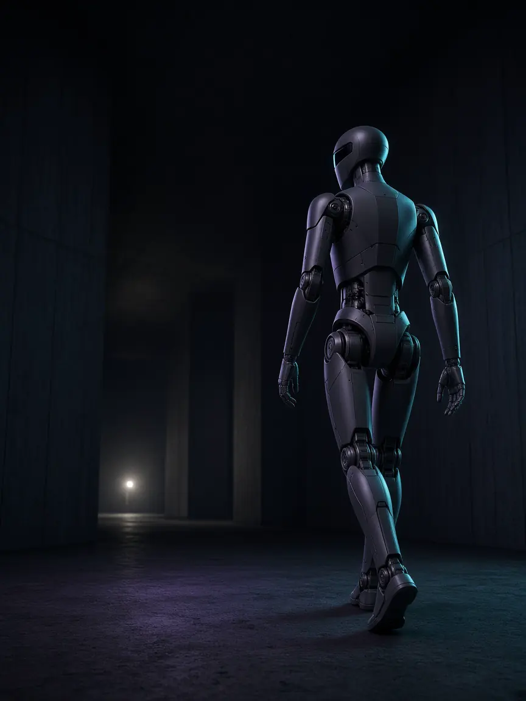
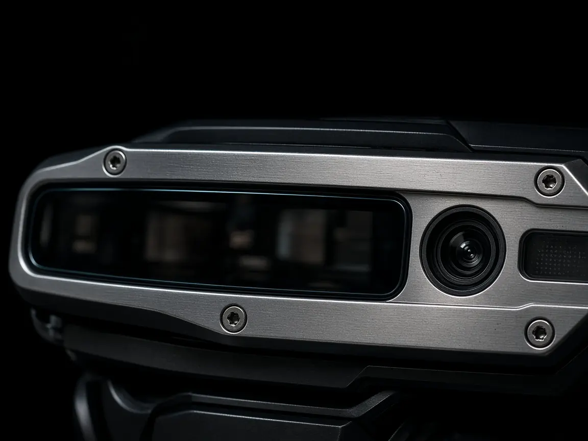
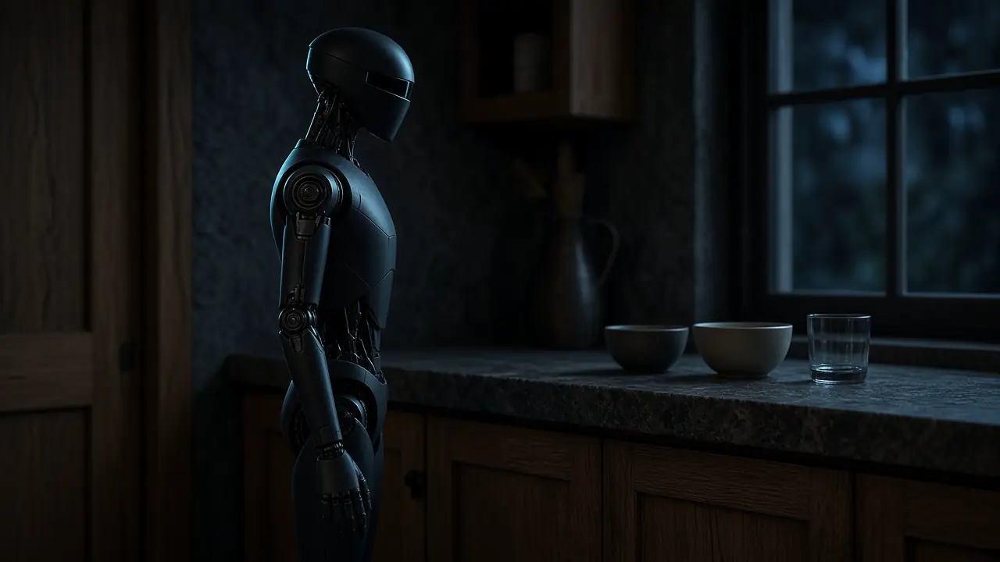
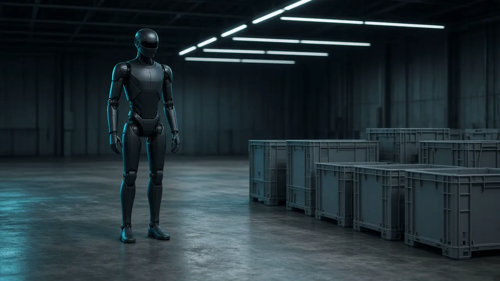
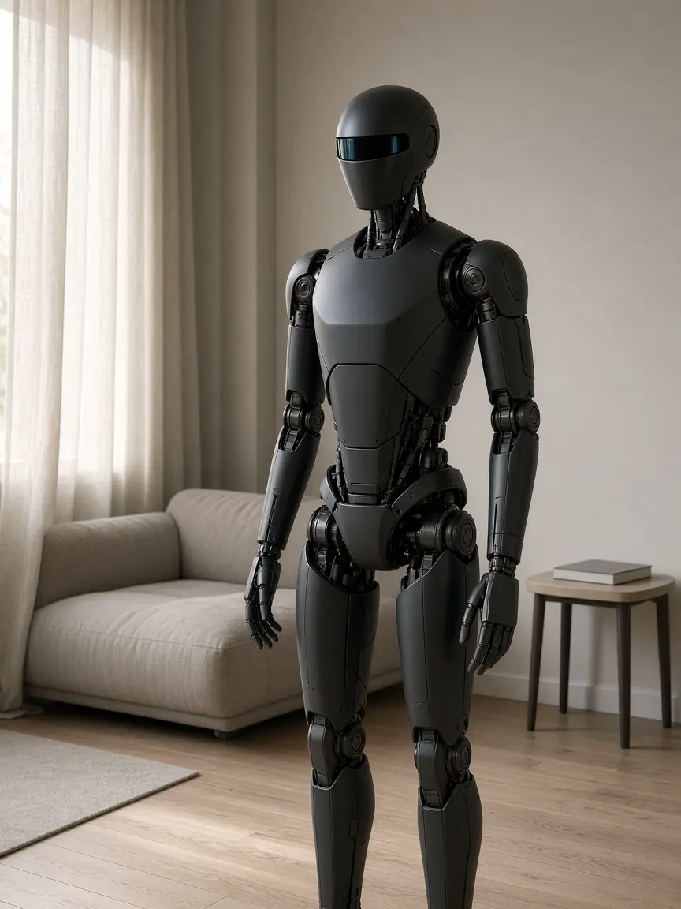
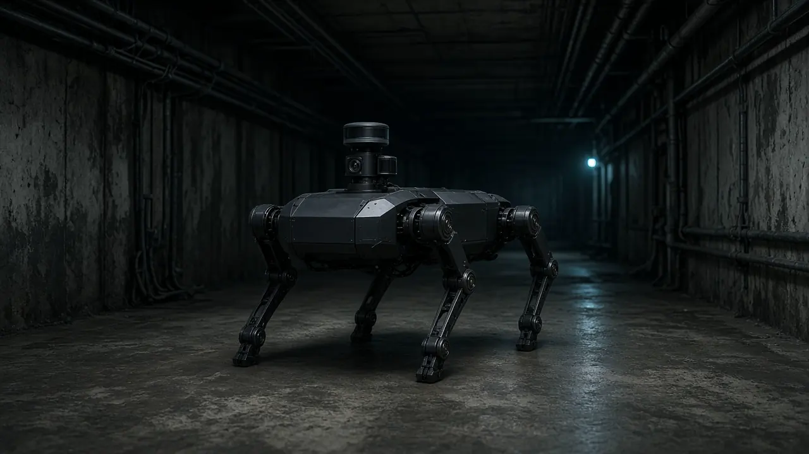

Робот

Она снимает мир, сверяет его с собственным телом и отвечает движением. Пока петля разомкнута, это станок.

Чувствует
Кадр приходит десятки раз в секунду. Энкодер и гироскоп — сотни и тысячи. Пока эти ответы не сведены, захват остаётся догадкой.

Думает
Картинка и короткая фраза становятся куском траектории. Баланс считается отдельно и быстрее. Связь может моргнуть — ноги остаются.
Действует
Намерение становится током. Сотни герц, на силовых осях около килогерца. Ошибка сенсора возвращается в следующий такт.

Figure 03
Helix ведёт всё тело. В сентябре 2026, в тридцати чужих домах, полный успех на трёх бытовых делах вырос с 9% до 56% после датасета Index. Открытого SDK нет.

NEO
1X обозначила поставки в США на 2026 год. Мировая модель сначала снимает видео будущего — около одиннадцати секунд на пять секунд ролика — и только потом достаёт движение.

Atlas и Spot
Электрический Atlas показали на CES в январе 2026. Этот год отдан Hyundai и DeepMind. Spot — другой зверь: серийный, с открытым Python SDK.
Unitree
G1 и H1 отдают моторы через unitree_sdk2 и ROS 2. Это тело с адресом, не мозг в комплекте.
Optimus
В третьем квартале 2026 Tesla назвала Фримонт ранним рампом. Внешние поставки — примерно конец 2027. Опубликованной модели нет.
Слои
Снаружи отдают намерение. ROS 2, SDK, телеоперация, борт, станция. Агент вызывает навык. Баланс наружу не отдают.
Чем они думают
Helix и 1XWM закрыты. openpi отдаёт π0, π0-FAST и π0.5. GR00T можно доучить. У Gemini шире открыто рассуждение, не сама VLA.
Петля уже
замкнута.
Mind — разбор на ноябрь 2026. Кадры — вымышленная машина. Частоты — порядок величин, не спецификация одной модели. Цифры взяты из публичных сообщений компаний.